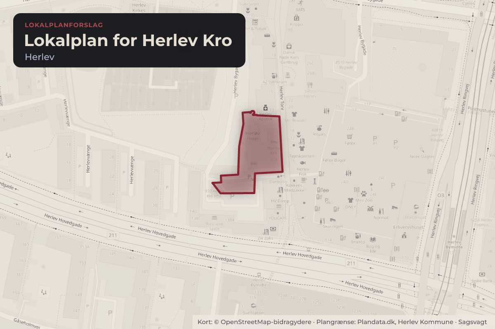
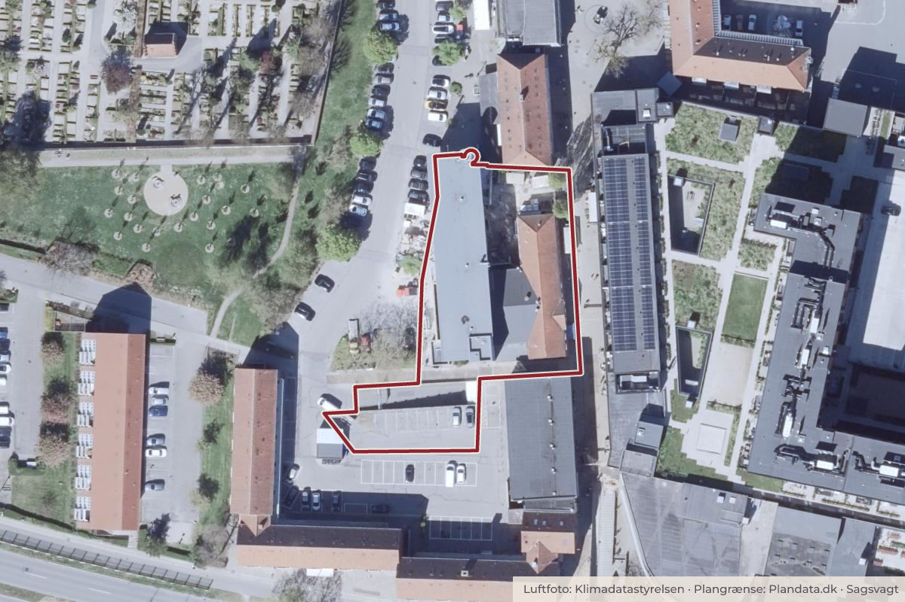

Besluttet 27. august, Kommunalbestyrelsen, Herlev
Forslag til Lokalplan 142 for Herlev Kro
Kommunalbestyrelsen skal godkende, at forslag til Lokalplan 142 for Herlev Kro sendes i offentlig høring. Lokalplanforslaget har til formål at bevare den oprindelige krobygning og sikre bygningens bevaringsværdige træk.

Kort: © OpenStreetMap-bidragydere. Plangrænse: Plandata.dk, Herlev Kommune.

Har du et billede fra Lokalplan for Herlev Kro? Send det til os
Kort fortalt
- Forslaget
- Forslag til Lokalplan 142 for Herlev Kro sendes i offentlig høring i fire uger.
- Lokalplanforslaget ikke miljøvurderes.
- Hvem
- Kommunalbestyrelsen, Herlev Kommune
- Hvornår
- Torsdag 27. august 2026
- Status
- Besluttet. Ad 1.: Tiltrådt. Ad 2.: Tiltrådt. Beslutning fra Økonomi- og Planlægningsudvalget, 12. august 2026, pkt. 154: Ad 1.: Tiltrådt. Ad 2.: Tiltrådt. Beslutning fra Miljø-, Klima- og Teknikudvalget , 15. juni 2026, pkt. 78: Ad 1.: Tiltrådt. Ad 2.: Tiltrådt.
Læs hele sagen Kommunens egen tekst
Indstilling
FORVALTNINGEN INDSTILLER,
1. At forslag til Lokalplan 142 for Herlev Kro sendes i offentlig høring i fire uger.
2. At lokalplanforslaget ikke miljøvurderes.
Baggrund
Økonomi- og Planlægningsudvalget godkendte den 3. september 2025 igangsætningen af Lokalplan 142
for Herlev Kro.
Herlev Kro har i generationer været et centralt samlingspunkt, og en vigtig del af byens identitet.
Krobygningen mod Herlev Torv udgør et arkitektonisk og kulturhistorisk pejlemærke, som bidrager til
sammenhæng og genkendelighed. Formålet med Lokalplan 142 er at sikre, at disse kvaliteter bevares,
så bygningen fortsat kan spille en aktiv rolle i bymidten. Lokalplanen fastlægger derfor bestemmelser, der
beskytter bygningens bevaringsværdige træk og sikrer, at ændringer sker med respekt for dens historie.
Økonomi- og Planlægningsudvalget godkendte den 3. december 2025 en servitut med
bebyggelsesregulerende bestemmelser for Herlev Kro. Det er intentionen, at disse bestemmelser
fremadrettet reguleres gennem lokalplanen, så servitutten kan aflyses efter lokalplanens vedtagelse.
Forslag til Lokalplan 142 forelægges nu med henblik på udsendelse i offentlig høring. Lokalplanen er
vedlagt som pdf og kan læses digitalt på følgende link:
https://herlev.viewer.dkplan.niras.dk/DKplan/DKplan.aspx?LokalplanId=185
Eksisterende forhold
Herlev Kro og Hotel, nu Go Hotels Herlev, er beliggende på Herlev Torv 7 på gågaden (matr.nr. 7b,
Herlev). Bebyggelsen består af den oprindelige krobygning i to etager mod Herlev Torv, en
sammenbygget midterbygning i to etager og en bagvedliggende hotelbygning i fire etager med i alt 80
værelser. Den oprindelige krobygning udgør det centrale bevaringsværdige element.
Lokalplanens indhold
Lokalplanen fastholder eksisterende etageareal, bygningsomfang og bygningshøjder og giver ikke
mulighed for yderligere bebyggelse. Anvendelsen fastlægges til hotel-, restaurant- og caféformål, med
mulighed for indretning af gårdhave med udeservering.
Grundejer har udtrykt ønske om en tilbygning med en ekstra etage på den bagvedliggende hotelbygning
mod Herlev Bygade. Det vil kræve, at der præsenteres et projekt, som blandet andet løser krav til
parkering, friareal og brandredning på tilfredsstillende vis, samt at der udarbejdes et tillæg til lokalplanen.
Den oprindelige krobygning ud mod Herlev Torv er bevaringsværdig. Lokalplanen fastsætter
bestemmelser for facader, tag, vinduer og døre samt karakteristiske bygningsdetaljer. Frontispicen med
skilt og årstal skal bevares. Bygningen må ikke nedrives, og ændringer af bygningens ydre fremtræden,
herunder skiltning, kræver kommunens godkendelse.
Den øvrige eksisterende bebyggelse mod Herlev Bygade er ikke udpeget som bevaringsværdig, men
indgår i den samlede bebyggelse omkring Herlev Kro. Der fastsættes bestemmelser for facader,
materialer og tagformer, så bebyggelsen fremstår sammenhængende og arkitektonisk underordnet den
bevaringsværdige bygning.
Parkering og friareal
Lokalplanen fastholder de eksisterende forhold for vejadgang og parkering, herunder at eksisterende 11
parkeringspladser opretholdes.
Friarealet for erhverv skal udgøre mindst 15% af bruttoetagearealet. Gårdhaven udgør et centralt
opholdsareal med mulighed for udeservering i tilknytning til café eller restaurant. Lokalplanen sikrer
samtidig bevarelsen af de to markante træer foran Herlev Kro mod Herlev Torv.
Kommuneplan 2023 og Forslag til Kommuneplan 2026
Lokalplanområdet er omfattet af rammeområde C20 i Kommuneplan 2023-2035 og i Forslag til
Kommuneplan 2026. Lokalplanforslaget er i overensstemmelse med begge kommuneplaners rammer og
viderefører udpegningen af Herlev Kro som bevaringsværdig bygning.
Miljøvurdering
Lokalplanforslaget er screenet i henhold til Miljøvurderingsloven. Det vurderes, at lokalplanen, henset til
dens omfang, placering og bevarende karakter ikke vil få væsentlig indvirkning på miljøet, og der skal
derfor ikke foretages en egentlig miljøvurdering.
Høring af forslag til lokalplan
Forslag til Lokalplan 142 sendes i offentlig høring i fire uger, forventeligt i perioden fra den 31. august
2026 til den 28. september 2026.
Efter afsluttet offentlig høring forelægges de indkomne høringssvar sammen med forvaltningens
vurdering samt eventuelle ændringsforslag til politisk behandling.
Lovgrundlag
Planloven og Miljøvurderingsloven.
Økonomi
Intet at bemærke.
Beslutning
Ad 1.: Tiltrådt.
Ad 2.: Tiltrådt.
Beslutning fra Økonomi- og Planlægningsudvalget, 12. august 2026, pkt. 154:
Ad 1.: Tiltrådt.
Ad 2.: Tiltrådt.
Beslutning fra Miljø-, Klima- og Teknikudvalget , 15. juni 2026, pkt. 78:
Ad 1.: Tiltrådt.
Ad 2.: Tiltrådt.
Kilde: Herlev Kommune, Kommunalbestyrelsen, referat fra mødet torsdag 27. august 2026, punkt 8. Læs den originale sag hos kommunen.